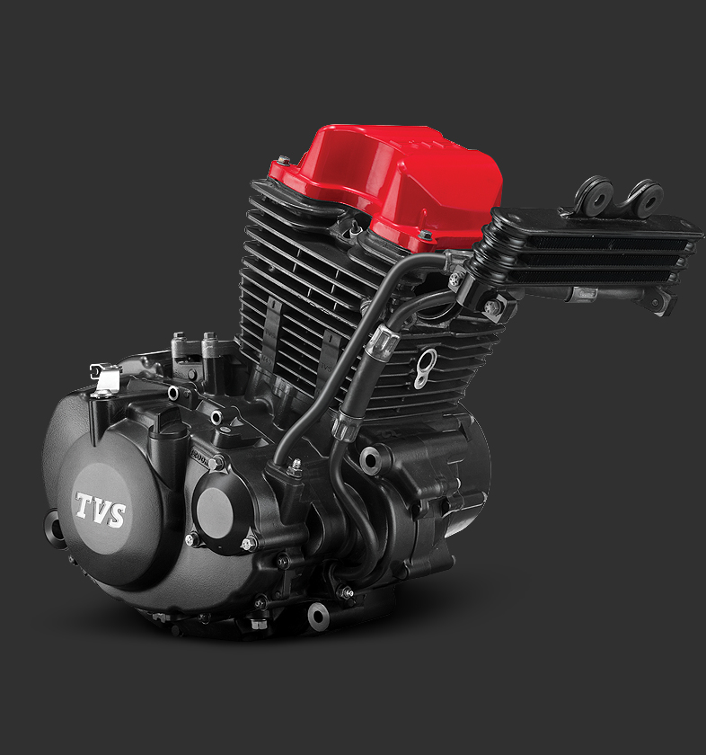

TVS Apache RTR 160
A sporty and reliable motorcycle for everyday riding.
About the Bike
- Sporty and aggressive design
- Reliable 160cc engine
- Suitable for daily commuting
The TVS Apache RTR 160 is known for its aggressive styling, responsive engine,
and reliable build quality.
Its muscular fuel tank and sharp design make it appealing to young riders.

Engine & Performance
The Apache RTR 160 comes with a 160cc single-cylinder, air-cooled engine that
delivers smooth and consistent performance.
It performs well in city traffic and provides a comfortable highway ride
with good fuel efficiency.

Why Choose Apache RTR 160?
The TVS Apache RTR 160 offers a good balance of performance, comfort, and style,
making it an ideal choice for students and daily riders.